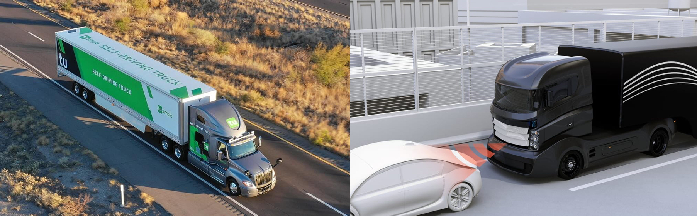
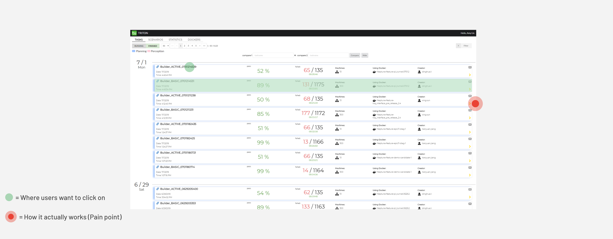
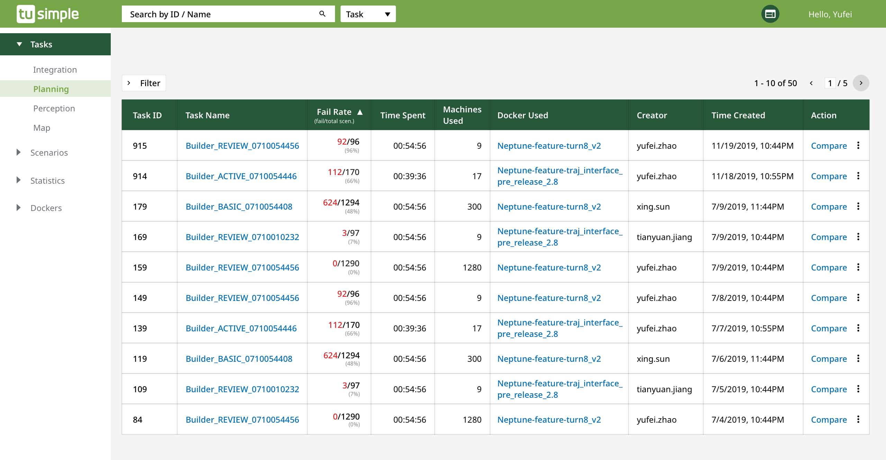
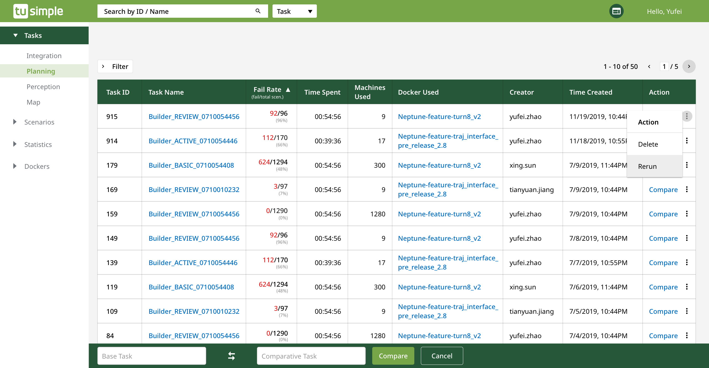
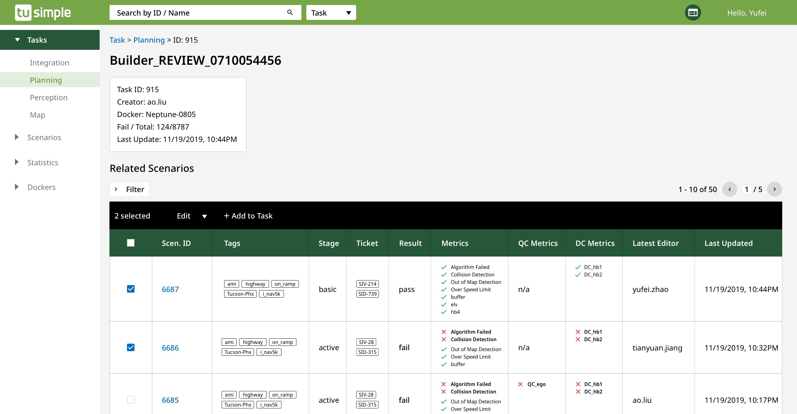
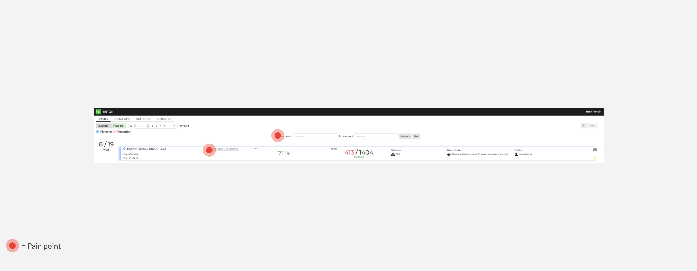
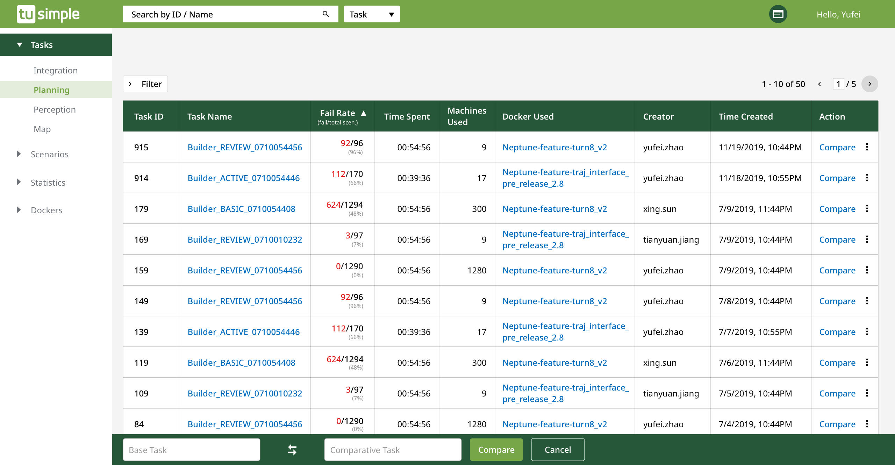
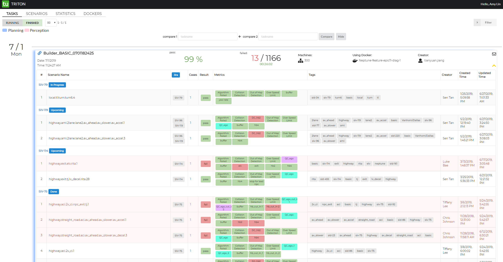
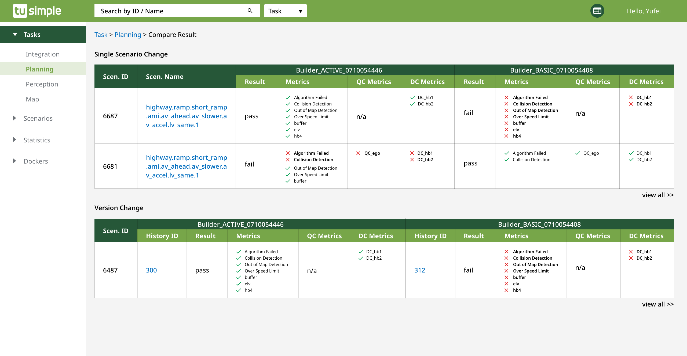
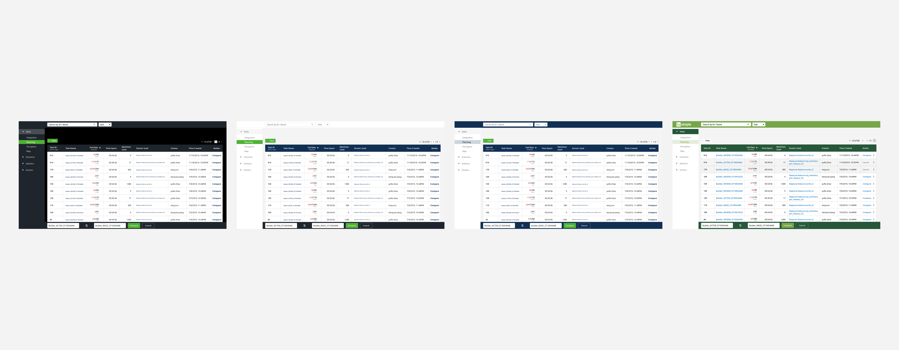

Triton Redesign
Simulation Tool for Self-Driving Trucks
Type
- Industry Work
- UX Design & Research
Duration
- 4 months
(3 months for research & design + 1 month for dev)
My Role
- Product Designer
- UX Researcher
What I Did
- UX Research
- Product Design
- Design Pitch
Design Challenge
Redesign Triton, a simulation tool for self-driving trucks
Triton is an internal database that visualizes simulation test cases designed by the Verification team at TuSimple, a unicorn startup, working on self-driving trucks. Algorithms run through all the simulated test cases when any change in code is implemented. Triton visualizes the test result and allows engineers to compare between different scenarios.
Before I joined, Triton has gone through 4 iterations without input from UX professionals. Hence, despite the one-year effort of a team of 4 engineers, there are multiple breaks in the user flow, leading to complaints and low productivity across engineering and algorithm teams. Hence, I was given 3 months to redesign Triton, as a UX/Software Product Designer.
Triton is a simulation database/tool for self-driving trucks
Solution Overview
Streamline and unify interactions across Triton
To solve a complex design problem in a relatively short timeframe, I decided to focus on the areas where I can make the most impact with the least effort, for me and for the development team. In this redesign, I made huge usability improvement in the follow areas:
- Streamlined navigation across Tasks, Scenarios and Dockers tab
- Increased clarity around actionable elements, including task submission, detail view option and task comparison
- Created consistent experience/interaction across Triton and other TuSimple tools
- Improved accessibility by updating type ramp, icons and colors
Screens of Triton
Research
Heuristic Evaluation
I was brought onto the project like a pure white sheet of paper – which gives me an advantage – that I can interact with Triton as a first-time user. As I explored Triton, I listed out the areas I had a hard time interacting with in addition to potential usability issues.
Interview
As I gained more knowledge about how Triton and simulation works with the self-driving trucks, I started to reach out to current users of varying levels of technical skills and familiarity with Triton – from interns to team managers.
Insight-Driven Design
Triton is a simulation tool of great complexity and requires domain knowledge. Hence, for context, I’ll explain a little bit about a few terms I’d mention quite often.
- Tasks: Consists of multiple scenarios. Also known as simulation tasks which is designed to test algorithms
- Scenarios: Known as traffic and road situation, which includes parameters like speed, degrees and variables like cars running at different speeds
- Dockers: Makes sure that algorithms built under different development environment are run in the same controlled settings
Insight 1
Action buttons are small and unintuitive, so it takes more time/steps than necessary to finish a task.
The screens shown below are the Triton old dashboard for Tasks. In the past, to look at the details of a Task, users have to click on the yellow arrow, shaded in red in picture below. However, when asked during the user test, users say that they want to click on the names of the Task or even the whole button, shaded in green.
Old design for Triton dashboard
Solution: A more consistent visual representation
In the new design, any UI element provokes an action such as view, edit or compare, is highlighted in blue, a color that is widely used on web to imply links.
New Triton design uses blue to differentiate clickables from the non-clickables
Interesting Insight
To rerun an existing task, it requires users to start all over.
Intuitively, if a user wants to rerun a task based on an existing task with minor changes/edit in Docker or Scenarios, they should be able to hit on a button that will walk them through the steps to rerun a task. However, the technical issue is, before a user can submit a task for simulation, they would need to build a docker first – In this specific use case, it means making changes to package versions in the Dockers – which takes at least 30 minutes and is done through a separate platform in a different tab. Then, after a Docker is built, users have to reselect all the scenarios in the Scenarios tab again – which takes a lot of time to search for and filter.
How rerunning a task should work -- ideally
Workaround
Since it is hard to change the whole system framework in such a short time, instead of changing the way Dockers are built, I focus on cutting down the amount of time a user has to reselect the scenarios by making the existing scenarios in a Tasks selectable. This way, users don’t have to search in the Scenarios tab all over again. Moreover, to create a better means of navigation, I also make the Docker name in the Task tab clickable, so users can make edits without having to jump between 2 tabs.
Allowing users to select the scenarios in an existing task saves the time on search and filter all over again
Insight 2
Compare feature is hard to understand for first-time user.
In the old design, users of Triton need to hover on the Task to see the compare action. In addition, Triton uses Compare 1 and Compare 2 to specify the 2 tasks being compared.
During my interview with current users, they told me that they’re satisfied with the current compare feature, which was beyond my expectation in that as a first-time user, I don’t know how to tell the difference between Compare 1 and Compare 2. Hence, I asked the question I had to my users – “What’s the difference between Compare 1 and Compare 2?” As it turned out, none of them were able to tell the difference between Compare 1 and Compare 2. In addition, people are requesting more actions while compare remains the most frequently used one.
Users can't tell the difference between Compare 1 and 2.
Solution: Create a more scalable action
In the new design, instead of using hover to showcase the compare feature, I created separate column for it. Moreover, in the new search bar, users can change the Base and Comparative Tasks within a click. Also, by clicking on the more icon, users can take more actions.
To create a consistent means of interaction across internal tools at TuSimple, I worked with the other designer building the other tools that Triton users interact with a lot on the Compare feature – so that the interaction is the same – both with a comparison bar on the bottom of the screen.
New design for Task comparison
Insight 3
Colors are powerful but they’re not necessarily accessible.
While I was conducting heuristic evaluation, I noticed that Triton only uses colors to show pass and fail. Only using colors to show pass/fail leads to 2 issues: 1) Users mentioned that the kind of green used in the old design has poor contrast on their monitor and 2) The design by itself isn’t accessible to all.
Triton used to use colors to show the Pass/Fail of different metrics
Solution: Color + Symbols = Accessible
While current users enjoy being able to skim through the color-coded pass/fail status, to design for the wider group of future users, I brainstormed with my users on how they look at the pass/fail status and eventually go with the solution that includes both colors and symbols.
New metrics uses both colors and symbols to suggest the pass/fail of metrics
Design Details
Triton color exploration

Development Spec
Takeaways and Reflection
This is the first enterprise-level product I designed – which was challenging in the beginning. However, as I got to learn more about how the system works and how my users interact with Triton on a daily basis, I started to enjoy the process and felt the pain points as if they were mine.
The other reason that made it challenging was because the engineering team didn’t have experience working with UX professionals before. Hence, what happened after I taught the team about accessibility – like do not use colors as the only way to differentiate between pass and fail and then showing them the wireframes of my design, rumors like “The new designer is getting rid of all the colors we have in our internal tool because we’re designing for people with color blind issues.” started to go around. However, because of this, I understand that I need to do well to prove the value of UX and engage my users more often in the process. This way, it sheds light on how UX process works -- Users know that I advocate for their needs in front of engineers and I'm designing for better changes.
I’m glad that my first full-time project was shipped smoothly eventually – and that I enjoy being called a designer very much. It makes me feel like my users need me, my engineers trust me and my stakeholders value my work. As my career advances, I hope I still maintain the curiosity I have for everything now.